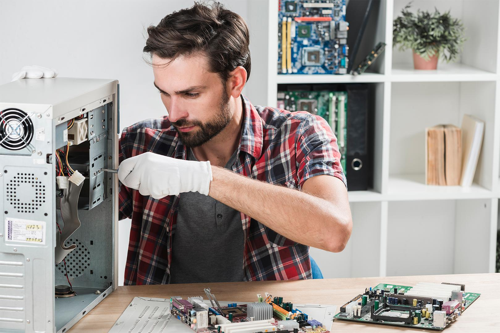

Лабораторія точного ремонту FixTech
Сервісний центр «FixTech» працює у сфері технічного обслуговування з 2019 року. Наша інженерна лабораторія оснащена інфрачервоними паяльними станціями, цифровими осцилографами та мікроскопами для виконання найскладніших робіт.
Ми спеціалізуємося на відновленні ноутбуків, робочих станцій, моніторів та мережевого обладнання. Кожен пристрій проходить вхідний та вихідний технічний контроль за 12 пунктами.
Зв'язатися з інженеромДодаткова інформація та правила обслуговування
Як підготувати техніку до здачі в сервіс
Перед візитом до сервісного центру рекомендуємо зробити резервну копію важливих документів, якщо пристрій вмикається. При собі бажано мати блок живлення (зарядний пристрій), особливо якщо проблема пов'язана із заряджанням акумулятора або мимовільним вимкненням під навантаженням.
Умови гарантійного супроводу
Після завершення ремонту клієнт отримує акт виконаних робіт із зазначенням серійного номера пристрою, переліку замінених комплектуючих та терміну гарантії (від 90 до 365 днів).